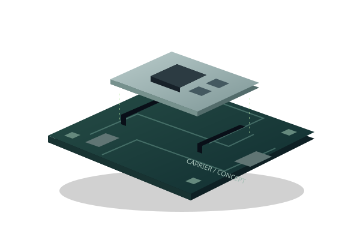

TRAINING SERIES
QWA309 Training Kit
ลอง Input เห็น Output แล้วเริ่มสร้าง

KIT_PSE84_AI + QWA309
สำรวจ Training BoardTESAIoT / IDEAS INTO HARDWARE
เริ่มจากบอร์ด สร้างสิ่งที่มองเห็นได้ แล้วต่อยอดสู่ Edge AI
TRAINING SERIES
ลอง Input เห็น Output แล้วเริ่มสร้าง
KIT_PSE84_AI + QWA309
สำรวจ Training BoardDEVELOPMENT PREVIEW
แนวคิดแพลตฟอร์ม แยก Compute และ Base

ภาพจำลอง · ไม่ใช่แบบ PCB สุดท้าย
สำรวจ Development PreviewDEVELOPER HUB
ค้นหา Example แล้วต่อยอดจาก Source
EXAMPLES · SOURCE · LEARNING
เปิด Developer HubMADE TO BE EXPLORED
สามเรื่องที่คัดมาให้เริ่มรู้จักบอร์ด ก่อนเลือกโปรเจกต์ของคุณ
01 / INPUT → OUTPUT
ลอง Pot → RGB บนหน้าเว็บ แล้วเปิด Source สำหรับ Hardware จริง การเลือกสีด้วย Threshold ไม่ใช่ AI
เปิด Hardware Example SOURCE SCREENSHOT
SOURCE SCREENSHOT02 / SENSE → UNDERSTAND
เริ่มอ่าน Sensor และรวมข้อมูลเป็น Dashboard เพื่อเข้าใจ Input ก่อนต่อยอด Application
สำรวจ Sensor Hub EXISTING DEMO · 0:39
EXISTING DEMO · 0:3903 / SIGNAL → INTELLIGENCE
ดูคลิป BENTO ต้นทาง แล้วเลือกเส้นทาง Audio, Motion หรือ Vision จาก Reference ของ Infineon
เข้าสู่ Edge AI Hub